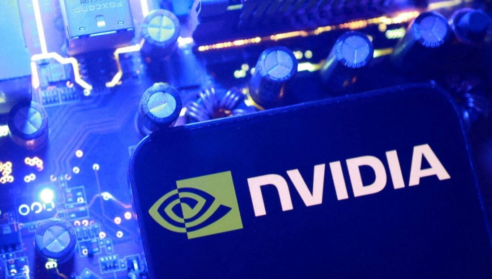

Nvidia Board Meets to Decide Jensen Huang's Future as House Subpoena Looms
Update to flash 309: Reuters reported on November 12, 2026 that Nvidia's board met on Wednesday to decide whether to oust founder and chief executive Jensen Huang, hours after the Wall Street Journal reported the board was preparing to remove him. The House deadline for Huang to accept a closed-door briefing on November 18 passed on November 11 with no public reply, and House Foreign Affairs Chairman Brian Mast said his committee is preparing a subpoena, Bloomberg reported via TechCrunch. Nvidia has lost about $600 billion in market value this week. No decision has been announced, and Huang has not been removed.

- 01THE MEETING — Reuters reported on November 12, 2026 that Nvidia's board met on Wednesday to decide whether to oust founder and chief executive Jensen Huang, hours after the Wall Street Journal reported the board was preparing to remove him.
- 02THE DEADLINE — The House deadline for Huang to accept a closed-door briefing on November 18 passed on November 11 with no public reply; House Foreign Affairs Chairman Brian Mast said his committee is preparing a subpoena, Bloomberg reported via TechCrunch.
- 03THE WATCHPOINT — Whether the board announces a decision, an interim chief, or a successor; whether a subpoena is issued; and what the November 17 earnings call brings.
WHAT HAPPENEDWhat Happened
Update to flash 309. Nvidia's board of directors met on Wednesday, November 11, 2026 to decide whether to oust founder and chief executive Jensen Huang, Reuters reported, citing a source familiar with the matter. The meeting followed the Wall Street Journal's report hours earlier that the board was preparing to remove Huang, and the New York Times' report that Huang had a second extramarital relationship, with Kimberly Powell, Nvidia's vice president of health care, who reports to him. No decision has been announced, and Huang has not been removed as chief executive.
The congressional track moved in parallel. House China committee Chairman John Moolenaar said on Fox Business that Huang had until the end of Wednesday to respond to the request for a closed-door briefing on November 18; if he does not agree, he will likely be subpoenaed, Bloomberg reported via TechCrunch. House Foreign Affairs Chairman Brian Mast said on Wednesday that his committee is preparing a subpoena to send if Huang does not respond. The deadline passed with no public reply from Huang or Nvidia. Nvidia did not immediately respond to requests for comment.
The market cost is already large. Nvidia's shares slid about 8% in after-hours trading after the Journal's report, and the company has lost about $600 billion in stock market value this week since the board announced its investigation into Huang's relationship with Alice Huang, a former Megaspeed executive whom U.S. intelligence officials believe works for China's Ministry of State Security. Nasdaq futures fell 1%, while rivals AMD and Broadcom rose 4% and 3% respectively in after-hours trading. Huang, 63, has no obvious successor, owns about 3.6% of Nvidia's stock, and has dozens of direct reports.
WHY IT MATTERSThe meeting turns preparation into a decision point
Flash 309 recorded preparation: the Journal reported the board was preparing an ouster and might meet as soon as Wednesday. Reuters now reports the meeting is happening, which moves the story from contingency planning to a decision in progress. The distinction still matters: a meeting to decide is not a vote, and no outcome has been announced. But the board is no longer buying time with its investigation; it is weighing Huang's future while the probe runs.
The succession gap is the market's real worry. Huang co-founded Nvidia in 1993 and built it over three decades into the top supplier of AI chips, with tight personal control over dozens of direct reports and no publicly named successor. An immediate removal would leave a leadership vacuum at a roughly $4 trillion company days before earnings, which is why the $600 billion weekly value loss and the 1% Nasdaq futures drop read as a governance discount rather than a judgment on chip demand.
WHAT TO WATCHTwo clocks now run in public
The House clock has expired without a reply. Moolenaar's end-of-day deadline passed, and Mast's committee is drafting a subpoena. A subpoena, a belated agreement to brief, or continued silence each move the story differently, and the November 18 briefing date now sits one day after Nvidia's November 17 earnings report.
The board clock is the nearer one. Any statement from the board, an interim chief, or a successor name would settle what the reports only suggest. Separately, Axios reported that Commerce Secretary Howard Lutnick stalled a crackdown on companies suspected of diverting Nvidia chips to China, a thread that connects the governance crisis to the export-control questions behind the House inquiry.
SIGNAL JUDGMENT — ANALYSISThe board is deciding now; the question is whether it acts before its own probe ends
Tokenta Signal's judgment: The update that matters is the meeting itself. Preparation could have ended in a slower investigation; a board sitting down to decide Huang's future, with the House deadline expired and a subpoena being drafted, means the decision is being taken under pressure from both directions at once. The honest reading is still that nothing has been decided: no vote, no announcement, no removal. But investors have already priced the direction, with about $600 billion gone this week, and the next board statement will matter more than any single report. Until then, the facts are the reports themselves, and the ouster is reported, not done.
WHAT REMAINS UNCERTAINWhat Remains Uncertain
EVIDENCEEvidence
Reuters' report, read in full: Nvidia's board is meeting on Wednesday local time to decide whether to oust CEO Jensen Huang, a source familiar with the matter told Reuters, as the chipmaker grapples with reports of two extramarital affairs involving its longtime leader. Nvidia has lost about $600 billion in stock market value this week since the board announced its investigation, and Huang, 63, has no obvious successor. Nvidia did not immediately respond to a request for comment.
PRIMARY SOURCESPrimary Sources
- Reuters via Korea JoongAng Daily: Nvidia board meets to decide Jensen Huang's future, source says
https://www.koreajoongangdaily.com/world/nvidia-board-meets-to-decide-jensen-huangs-future-source-says/12968980 - TechCrunch: Congress to call Jensen Huang in to answer for alleged Chinese spy affair
https://techcrunch.com/2026/11/11/congress-to-call-jensen-huang-in-to-answer-for-alleged-chinese-spy-affair/ - Barron's: Nvidia Stock Tumbles. Jensen Huang Could Be Out Soon.
https://www.barrons.com/articles/nvidia-stock-price-huang-affair-ceo-ouster-26c99dad
RELATEDRelated Intelligence
- Microsoft Warns of Phishing Campaign Exploiting the Microsoft 365 Outage
- Microsoft 365 Outage Fully Closed as Business and Exchange Incidents Marked Service Restored
- Microsoft 365 Consumer Incident Remediated as Email Backlog Clears; Business Outage Still Open
- FAA Lifts Nationwide Ground Stop After Four Hours; Officials Blame Aging Equipment, Rule Out Cyberattack